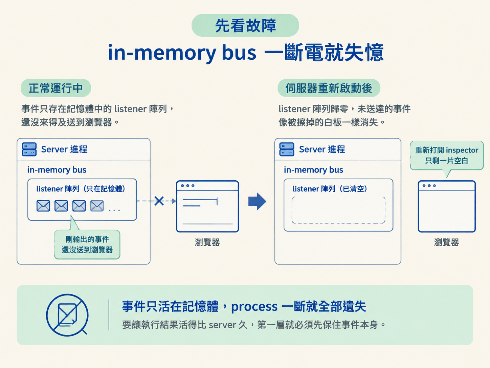
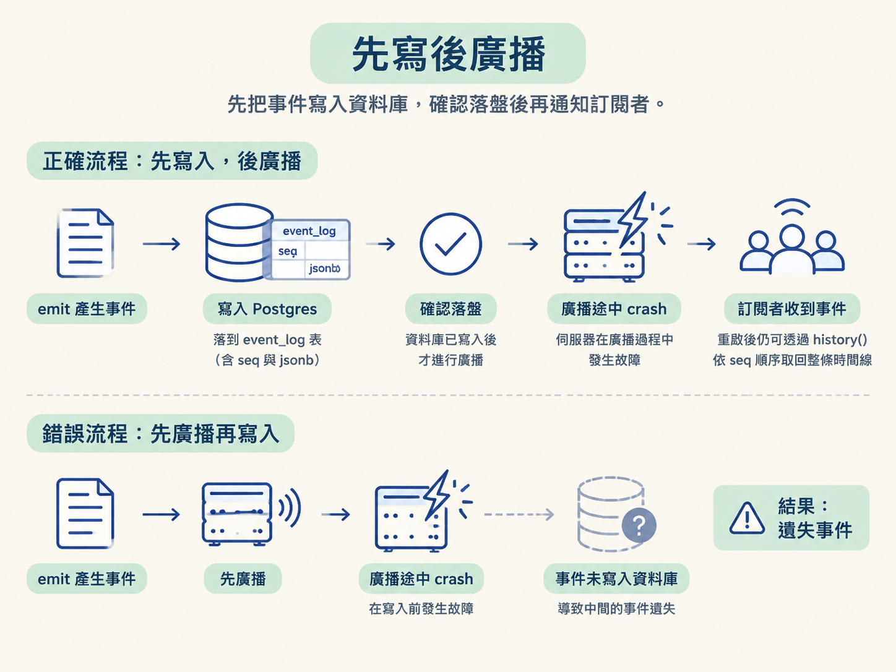

想像 inspector 正在看著 agent 一字一字輸出，結果 server 突然重啟。畫面重新打開後，剛才的事件全都不見了，像把白板擦乾淨一樣。問題不在 inspector，而在事件從頭到尾只存在 process 的記憶體裡。
這一課要把事件的「真相來源」從記憶體搬到 Postgres。完成後，事件會先寫入資料庫，再通知即時訂閱者；即使 server 在廣播途中掛掉，重啟後仍能透過 history() 依序重播完整時間線。
我們會做三件事：
event_log 表。history() 根據 seq 取回並重播事件。上一階段的 runtime 透過 in-memory event bus（記憶體中的事件匯流排） 傳送事件。model 吐出一個字，就呼叫 emit，再把事件交給存在 process 記憶體裡的 listener。
只要 server 還活著，這套做法看起來沒有問題。但 server 一旦掛掉或重啟，listener 陣列就會歸零。所有還沒被瀏覽器接住的事件也會一起消失。
此時重新打開 inspector，看到的只能是一片空白，因為歷史事件根本沒有保存到任何地方。要讓執行結果活得比 server 久，第一層就必須先保住事件本身。

課程會新增三個套件：
@dbos-inc/dbos-sdk：持久化執行引擎，先裝好備用。drizzle-orm：型別安全的 SQL 查詢層。postgres：Postgres.js 的 Node 驅動。這一步真正會用到的是 Drizzle 和 postgres 驅動。先建立 harness/db.ts，讓往後的持久化呼叫共用同一個資料庫客戶端：
import { drizzle } from "drizzle-orm/postgres-js";
import postgres from "postgres";
const connectionString = process.env.DATABASE_URL;
if (!connectionString) {
throw new Error("DATABASE_URL is not set");
}
const client = postgres(connectionString, { max: 5 });
export const db = drizzle(client);process.env.DATABASE_URL 是 Node 讀取環境變數的標準方式。連線字串不存在時立刻 throw，可以避免等到第一個查詢才出現更難定位的錯誤。
max: 5 是一個小型連線池設定；在課程情境中不會有大量並發。對其他程式碼來說，匯出的 db 就是一個可以查詢 Postgres 的 SDK。
事件流的持久化落點叫做 event_log。它只需要兩個欄位：
import { pgTable, bigserial, jsonb } from "drizzle-orm/pg-core";
export const eventLog = pgTable("event_log", {
seq: bigserial("seq", { mode: "number" }).primaryKey(),
data: jsonb("data").$type<AgentEvent>().notNull(),
});| 欄位 | 型別 | 它為什麼存在 |
|---|---|---|
seq | bigserial | 全域遞增的順序，作為依序重播與去重的根據 |
data | jsonb | 保存完整事件 payload；AgentEvent 只提供 TypeScript 編輯器的型別提示 |
seq 同時解決兩個問題。第一，它記錄事件寫入資料庫的先後，因此重播時可以照原順序取回。第二，如果同一件事被寫入兩次，也能透過不同的 seq 找出重複資料。
data 使用 jsonb，而不是把所有事件拆成一大堆固定欄位。原因很直接：事件種類很多，每種 payload 的形狀也不同。資料庫保存的是普通 JSON，AgentEvent 則讓程式碼在開發時享有型別檢查。這種「seq + jsonb」的設計並不只適用於 agent，任何需要保存事件流的應用程式都能使用。
另外，開機時會用 Drizzle 的 tagged SQL 執行 create table if not exists event_log ...，包成輕量的 ensureSchema。這相當於極簡的 runtime migration。正式系統通常會使用完整的 migration 工具；這裡則先確保課程啟動時不會被資料表不存在打斷。
接著把原本的記憶體 bus 搬進 harness，並移除有狀態的 class，只留下三個函式：
subscribe：加入事件訂閱。emit：建立事件、寫入資料庫，再通知訂閱者。history：依 seq 取回所有歷史事件。核心改變在 emit：它不再直接廣播，而是先把事件寫入資料庫：
export function subscribe(fn: Listener) {
listeners.push(fn);
return () => {
listeners.splice(listeners.indexOf(fn), 1);
};
}
export async function emit(input: EventInput) {
const event: AgentEvent = {
...input,
id: randomUUID(),
ts: Date.now(),
};
await db.insert(eventLog).values({ data: event });
listeners.forEach((fn) => fn(event));
}
export async function history(): Promise<AgentEvent[]> {
const rows = await db.select().from(eventLog).orderBy(eventLog.seq);
return rows.map((r) => r.data);
}這裡的順序是持久化的核心合約：先寫入，後廣播。

如果廣播到一半 server crash，事件早已躺在資料庫裡。server 重啟後，呼叫 history() 就能把它取回。相反地，如果先廣播、再寫入，兩個動作之間一旦 crash，就會出現「通知已送出，但資料沒有保存」的遺失事件。
subscribe 回傳 cleanup 函式，讓呼叫端可以移除自己的 listener。這和 React 的 useEffect cleanup 是同一種思路：不清理的話，listener 會越疊越多，最後造成記憶體洩漏。
history() 則依照 eventLog.seq 排序所有資料列，再映射回 data payload。離線或重新連線的 client 可以用它重播整條事件時間線。
現在你有三個明確的結果：
event_log 表。history()。因此，事件不再隨著 process 的生死一起消失。不過還有一個更大的問題：目前持久化的是「事件」，不是「工作過程」。model 那次昂貴的呼叫，以及工具執行的不可逆動作，仍然可能在重啟後被重新執行。
下一步要處理的，就是判斷哪些工作必須包成 durable step，讓執行本身也能安全地恢復。